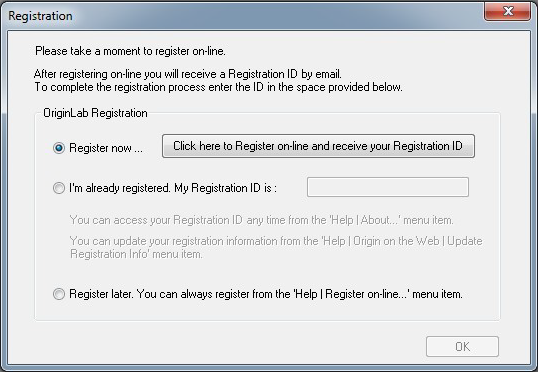

Dongle-Lizenz für V2019 oder älter
Dongle-LIC
Inbetriebnahme Ihres Dongles
- Installieren Sie Origin mit der Seriennummer des Dongles.
- Verbinden Sie den Dongle-Key mit dem USB-Port.
- Klicken Sie mit der rechten Maustaste auf das Symbol der Origin-Software und wählen Sie Als Administrator ausführen, um Origin zum ersten Mal zu starten.
- Der Dialog Registrierung wird geöffnet. Die Registrierung ist nicht zwingend, aber durch sie haben Sie bessere Möglichkeiten, durch uns unterstützt zu werden.
Um Ihr Origin zu registrieren,
- klicken Sie auf die Schaltfläche Click here to Register on-line and receive your Registration ID.

- Ihr Webbrowser wird auf der Webseite von OriginLab geöffnet. Melden Sie sich bei Ihrem Konto an oder erstellen Sie sich eines.
- Es wird eine Registration ID für Sie erzeugt. Kopieren Sie diese ID und fügen Sie sie wieder in Origin ein.
Wenn Sie Origin im Moment nicht registrieren möchten, wählen Sie die Option Register later (Später registrieren). Wenn Sie Origin das nächste Mal öffnen, wird der Dialog OriginLab Registration geöffnet, um Sie an die Registrierung zu erinnern.
Siehe auch
Ich sehe eine Fehlermeldung des Dongle-Treibers bzw. Notepads oder werde gebeten, eine Lizenz eingegeben. Wo liegt der Fehler?